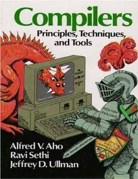

Agenda
- De qué trata el curso?
- Introducción e información de la clase
- Personal del curso
- Recursos
- Organización
- Reglas del juego
De qué trata este curso?
(Y de qué no trata)
- Implementación de lenguajes de programación
- Compiladores
- Intérpretes
- Estudio e implementación de compiladores:
- Análisis léxico
- Análisis sintáctico
- Árbol de sintáxis abstracta
- Análisis semántico
- Representación intermedia a bajo nivel
- Generación de código
- Optimización
De qué NO trata este curso?
- Aprender a programar
- Aprender Java
Usted ya sabe ambas cosas, es hora de ponerlas en práctica. :D
Implementación de lenguajes
- Compiladores
- Intérpretes
Implementación de lenguajes
Intérpretes
- Su tarea es ejecutar un programa (usualmente de alto nivel) en el CPU.
- Ejecuta instrucción por instrucción.
- Entrada (Input):
- Programa
- Datos del usuario
- Salida (Output):
- Resultados del programa
Implementación de lenguajes
Intérpretes
- Ventajas:
- Independiente de la arquitectura
- Portabilidad
- Distribución
- Desventajas:
- Rendimiento más pobre comparado a un compilador
- "On-line", necesario cada vez que se quiera ejecutar el programa.
Implementación de lenguajes
Compiladores
- Su tarea es traducir un programa de un lenguaje (usualmente de alto nivel) a otro lenguaje (usualmente de bajo nivel).
- Entrada (Input):
- Programa
- Salida (Output):
- Ejecutable
Implementación de lenguajes
Compiladores
- Ventajas:
- Mejor rendimiento.
- "Off-line", no es necesario para ejecutar el programa.
- Desventajas:
- Dependiente de la arquitectura.
Implementación de lenguajes
Compiladores
- Componentes:
- Análisis léxico
- Análisis sintáctico
- Árbol de sintáxis abstracta
- Análisis semántico
- Representación intermedia a bajo nivel
- Generación de código
- Optimización
Introducción
Información administrativa
Personal del curso

- Auxiliar de clase
- Cecilia Castillo (cicicas@galileo.edu)
- Auxiliar de laboratorio
- Juan Luis Flores (jlfloresp@galileo.edu)
- Corrector
- Carlos Alvarez (carlosalvarez@galileo.edu)
Bibliografía
Libro del dragón

- Compilers Principles, Techniques and Tools.
- Aho, Sethi y Ullman.
- ISBN-10: 0201100886.
- Desde ~$2 en Amazon.
Bibliografía
Libro del dragón (2da edición)

- Compilers Principles, Techniques and Tools.
- Aho, Sethi y Ullman.
- ISBN-10: 0321486811.
- Desde ~$72 en Amazon.
Bibliografía
Otros
- Libro del tigre
- Libro de la ballena
- Libro del arca


Sobre la clase
- Tenemos 7 periodos de clase semanales:
- Clases Magistrales (2 periodos semanales).
- Se toma en cuenta la participación de TODOS.
- Los slides NO son la clase, no se confíen.
- Laboratorios (3 periodos semanales).
- Una asignación de laboratorio por semana (normalmente).
- Se debe entregar la siguiente semana.
- Sesiones de trabajo (2 periodos semanales).
- Tiempo dedicado a trabajar en las asignaciones de proyecto.
- Se debe entregar lo trabajado al final de la semana.
- Clases Magistrales (2 periodos semanales).
Distribución de notas
| Hojas de Trabajo | 5% |
|---|---|
| Laboratorios** | 15% |
| Examenes | 30% |
| Proyecto | 50% |
| Total | 100% |
Reglas del juego
No código
- Queda prohibido:
- Poseer (o tomar) la solución de otro estudiante o una solución parcial en cualquier forma (electrónica, escrita o impresa).
- Compartir la solución o solución parcial a otro estudiante, incluso bajo el entendimiento de que no va a ser copiada.
- Trabajar juntos para desarrollar una sola solución y luego entregar copias (o versiones modificadas) de esta solución bajo múltiples nombres.
- Se utilizará software automático de detección de copia.
- La primera vez que se les sorprenda copiando, TODOS los involucrados tendrán –100.
- La segunda vez que se les sorprenda tendrán 0 (CERO) en el curso y se adjuntará una carta a su expediente detallando el incidente.
Reglas del juego
Exámenes
- 2 exámenes parciales.
- 1 examen final.
- NO se repiten exámenes bajo ningún motivo.
- Se realizará un examen de resposición al final del curso.
- Sujetos al reglamento de la Universidad: Si se les sorprende copiando tienen 0 (CERO) en el curso la primera vez y serán expulsados de la universidad la segunda vez.
Reglas del juego
Entregas tarde
- 4 entregas tarde de 1 día cada una, durante el semestre.
- Una entrega tarde comprende desde 1 minuto después de la hora de entrega y un máximo de 24 horas.
- NO se aceptarán excusas bajo ningún motivo después de agotado este recurso.
- Para utilizar este mecanismo debe enviar junto a su solución un archivo de texto llamado comodin.txt
- Se llevará un listado en el GES con el inventario de comodines por estudiante.
Reglas del juego
Forma de entrega
- Exclusivamente por medio del GES.
- Es resposabilidad del estudiante verificar que se le asigne un grupo para las tareas grupales.
- Si no entrega una tarea por no tener grupo, su nota será 0 (CERO).
Proyecto
Compilador de Decaf
- Lenguaje a compilar:
- Decaf
- Lenguaje objetivo:
- Assembler de MIPS
- Organizado en 6 fases:
- Análisis léxico y sintáctico
- Árbol de sintáxis abstracta
- Análisis semántico
- Representación intermedia a bajo nivel
- Generación de código
- Optimización
Proyecto
Compilador de Decaf
- Grupos de 2 personas:
- Repita después de mi: 2 personas.
- Difícil cambiar de pareja, escojan bien.
- Es un proyecto grande, la recomendación es trabajar en equipo.
- Comiencen a trabajar con tiempo.
- Cada entrega debe hacerse por el GES.